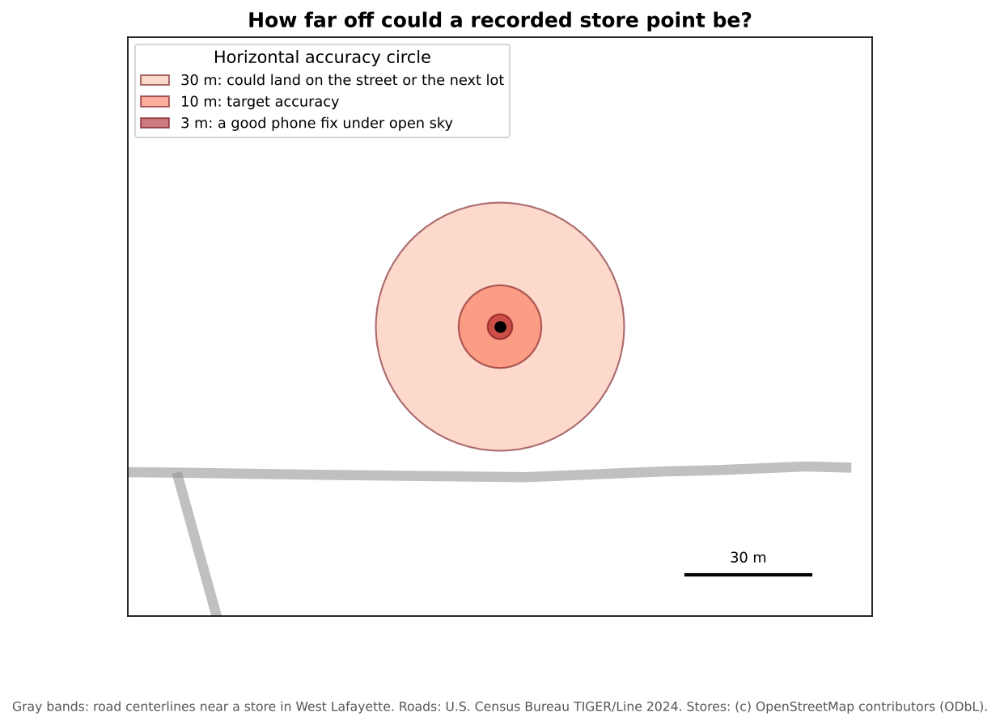

Collecting Data in the Field
Last updated on 2026-10-17 | Edit this page
Overview
Questions
- When should I collect my own geospatial data?
- How do I design a form so that field data is consistent and easy to analyze?
- How accurate is GPS on a phone, and why does it matter?
- What ethical questions come with collecting data about people and places?
Objectives
- Name common methods and apps for field data collection
- Design a data schema with clear fields, data types and dropdown choices
- Explain the main sources of GPS error and how to record accuracy
- Plan for consent, privacy and safety before going into the field
Why collect your own data?
Existing datasets rarely describe exactly what a social scientist needs. A city may publish where bus stops are, but not whether they have shelters. A business list may include grocery stores, but not whether they sell fresh produce or accept SNAP benefits. When the data you need does not exist, is out of date, or cannot be trusted, you collect it yourself.
Common methods include:
| Method | What you record | Example |
|---|---|---|
| Observation | Features and their condition, at a location | Sidewalk condition, store amenities, vacant lots |
| Surveys and interviews | People’s answers, often linked to a place | Where residents shop, and how they get there |
| Participatory mapping | Places people draw or point to | Areas residents consider unsafe, or important |
| Digitizing | Features traced from maps or imagery | Buildings visible on a CORONA image |
| Sensors | Measurements at locations | Air quality, noise, temperature |
Apps for field data collection
Most field data is now collected on a phone or tablet, with forms that record a location automatically.
| App | Notes |
|---|---|
| QField | Free and open source; uses projects prepared in QGIS; works offline; Android, iOS, Windows, macOS and Linux |
| Mergin Maps | Also based on QGIS projects, with built-in syncing |
| KoboToolbox and ODK | Free survey tools widely used in research and humanitarian work; strong for questionnaires, with GPS points |
| ArcGIS Field Maps and Survey123 | Esri’s apps; require an ArcGIS account, which many universities provide |
This module uses QField, because it is free and works directly with QGIS. The grocery access case study in the Case Studies module walks through a complete QField project.
Design the data before you collect it
Field data collection fails most often not in the field, but at the desk beforehand. If every person invents their own categories, the result cannot be analyzed. Before anyone goes out, decide on a schema: the list of fields, their types and their allowed values. The Data Management module’s Designing Your Data episode shows how to write one as a data dictionary, with field types, domains and unique IDs. For field work, a few rules matter most:
- Use dropdowns (also called domains or value maps) wherever possible. Free text produces “SNAP”, “snap”, “EBT” and “yes” for the same thing.
- Always include Unknown. Guessing introduces bias; “Unknown” is honest.
- Make essential fields required, so a record cannot be saved without them.
- Write a placement rule for points, for example “stand at the main public entrance”. Without one, some people will mark the middle of the building and others the parking lot.
- Test the form on a few real sites before the full collection.
The QField demonstration in the Case Studies module shows a complete schema for mapping grocery stores.
How accurate is GPS?
Phones use GNSS (Global Navigation Satellite Systems: GPS, Galileo, GLONASS and BeiDou) to find their position. Under open sky a modern phone is usually accurate to about 3 to 5 meters, but accuracy gets much worse:
- next to tall buildings, which block satellites and bounce signals (called multipath)
- under dense trees
- indoors
- in the first moments after the app starts, before enough satellites are found
Field apps such as QField show the current accuracy as a circle around your position and a number in meters. Wait until it settles, set a target (for example, under 10 m), and record the accuracy with every point. External GNSS receivers can reach sub-meter or even centimeter accuracy, at extra cost.

Does a few meters matter? For counting stores in a county, rarely. For measuring walking distance to a store entrance, or deciding which side of a boundary a store is on, it can.
Ethics, privacy and safety
Collecting data about places often means collecting data about people. Before you start:
- Get approval. Research with human participants (surveys, interviews, photos of people) usually needs review by your institution’s Institutional Review Board (IRB).
- Ask for consent, and explain how the data will be used and shared.
- Protect privacy. A precise location can identify a person or a household, so avoid recording home locations unless you must. The Data Curation module’s Ethics and Sensitive Location Data episode covers how to store, mask and share sensitive locations.
- Respect property and people. Stay on public land unless you have permission. Do not photograph people without consent.
- Stay safe. Work in pairs, tell someone your route, and carry a charged phone.
- Keep field notes. Record the date, the team, the weather, problems and decisions. They become part of your metadata.
Check the data quickly (quality assurance)
Review the data the same day while you still remember what you saw: are required fields filled in, do points fall inside the study area, is any place recorded twice, are categories used the same way by everyone, and do photos match their records? The Data Management module’s Data Quality episode explains quality checks (and the difference between quality assurance and quality control) in more depth.
Design a schema
You are mapping bus stops in your city to study accessibility for wheelchair users. List five fields you would collect, with their type and allowed values.
One possible schema:
| Field | Type | Allowed values |
|---|---|---|
stop_id |
Text | Code shown on the stop sign, to match the transit agency’s data |
shelter |
Dropdown | Yes, No, Unknown |
bench |
Dropdown | Yes, No, Unknown |
curb_ramp |
Dropdown | Yes, No, Unknown |
surface |
Dropdown | Paved pad, Grass or dirt, Other |
photo |
Attachment | |
notes |
Text |
A placement rule, such as “stand at the stop sign”, keeps the points consistent.
Spot the problems
Three volunteers mapped the same neighborhood. Here are some of their records:
| store_name | store_type | snap_accepted | gps_accuracy_m |
|---|---|---|---|
| Fresh Foods | supermarket | yes | 4 |
| Fresh Foods Market | Supermarket | EBT | 6 |
| Corner Stop | gas station | 38 |
What problems can you find, and how would a better form have prevented them?
- The first two rows are probably the same store entered twice with different names. A QA check for nearby points with similar names would find it.
-
store_typeuses inconsistent capitalization and a category (“gas station”) that is not on the list. A dropdown prevents both. -
snap_acceptedhas “yes” and “EBT”, and one blank. A Yes, No, Unknown dropdown, made required, fixes this. - An accuracy of 38 m is poor. The volunteer should have waited for a better fix, or written a note.
- Collect your own data when what you need does not exist or cannot be trusted
- Design the schema first: clear fields, dropdowns, an “Unknown” option and a placement rule
- Phone GPS is typically accurate to a few meters under open sky, and much worse near buildings and trees; record accuracy
- Plan for consent, privacy and safety before collecting data about people and places
- Check data the same day it is collected